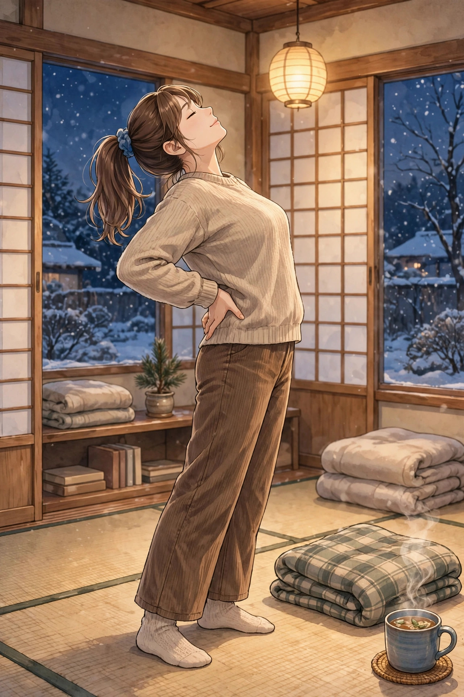

冬の腰の重だるさ
女性のお悩みコラム 第10回｜ステラポラリス東三国

腰の重さは、温めて・ゆるめて・動かして
「朝起きたとき、腰が重くて体を起こすのがつらい」「夕方になると、腰のあたりがずっしり重だるい」――小雪を過ぎて冷え込みが増すこの時期、腰の重だるさを感じる方が増えます。寒さで体が縮こまり、筋肉がこわばると、腰まわりの動きが小さくなり、血の巡りも滞りがちになります。さらに、寒い日は外出が減って座っている時間が長くなり、腰への負担が積み重なります。このコラムでは、医学・東洋医学・アロマ・ハーブ・薬膳の5つの視点から、冬の腰の重だるさの仕組みを見つめ、温めてゆるめるセルフケアをご紹介します。
医学の視点：腰の重だるさは「筋肉のこわばり」と「血流の低下」から
腰を支えているのは、背骨の両側にある脊柱起立筋（せきちゅうきりつきん）や、背骨の深いところにある多裂筋（たれつきん）といった筋肉と、骨盤まわりの筋肉です。寒さで体が冷えると、これらの筋肉は緊張して硬くなり、血の流れが悪くなります。血流が落ちると、筋肉に酸素や栄養が届きにくくなり、疲労物質がたまりやすくなるため、腰が重だるく感じられます。座りっぱなしの姿勢も大きな理由です。椅子に長く座っていると、腰の筋肉は同じ姿勢で支え続け、骨盤が後ろに倒れて腰のカーブが崩れやすくなります。1時間以上座り続けると、腰まわりの筋肉はかなり疲れてきます。医学の視点からの基本は、腰を冷やさないことと、同じ姿勢を長く続けないことです。30分に1回は立ち上がって体を伸ばす、腰まわりを温める、といった小さな習慣が、腰の重だるさをため込まないコツです。急に重いものを持ち上げるときは、膝を曲げて腰を落とし、体に近づけて持つようにしてください。
東洋医学の視点：腰は「腎」の働きとつながる場所
東洋医学では、「腰は腎の府（腎の働きが現れる場所）」と言われ、腰と腎の働きを深く結びつけて考えます。腎は、体を温める力や、成長・老化に関わる生命力の源とされ、冷えが腎の働きを弱めると、腰が重だるく感じやすくなると考えられています。冬は腎の働きが表に出やすい季節とされ、腰の養生を意識するのによい時期です。腰のケアで知られるツボに「腎兪（じんゆ）」があります。背中の腰のあたり、へその高さで背骨から指2本分ほど外側にあるツボで、腰の重だるさを感じたときに、手のひらで温めたり、指の腹でやさしく押したりするケアに広く使われてきました。もう一つは「大腸兪（だいちょうゆ）」で、腎兪より少し下、骨盤の上端の高さにあります。膝の裏の真ん中にある「委中（いちゅう）」も、腰から脚にかけての巡りを整えるツボとして知られています。寝る前に湯たんぽやカイロで腰を温めるのも、東洋医学の養生になじむ方法です。
アロマの視点：温かみのある香りで、腰まわりをほっとゆるめる
アロマの楽しみは、香りをきっかけに体を温め、気持ちをゆるめる時間を作ることにもあります。マジョラムの精油は、温かみのある甘いハーブの香りが特徴で、寒い季節のくつろぎ時間によく使われます。ローズマリーの精油は、すっきりとしたハーブの香りで、体を動かす前の気分転換に向いています。ジュニパーベリーの精油は、木の実のようなすっきりした香りで、入浴の時間によく使われます。手軽な使い方は、キャリアオイル（ホホバオイルやスイートアーモンドオイルなど）に精油を1〜2滴混ぜ、腰まわりにやさしくなじませる方法です。手のひらで温めてから塗ると、香りと温かさが広がります。お風呂に入るときは、精油を2〜3滴、キャリアオイルやはちみつに混ぜてから湯に入れると、香りがふわりと広がります。精油は原液を直接肌につけないこと、妊娠中の方や持病のある方、お薬を使っている方は使用前に専門家へ相談することなど、一般的な注意を守って楽しんでください。
ハーブの視点：体を内側から温める、冬の一杯
ハーブティーは、温かい飲み物そのものが体を内側から温めてくれる、暮らしに取り入れやすい方法です。ジンジャーティーは、生姜のぴりっとした辛みと温かさが特徴で、冷えを感じる冬の午後に向いています。シナモンティーは、甘い香りと温かみのある味わいで、夜のくつろぎ時間によく使われます。ローズヒップティーは、ほどよい酸味と赤い色が特徴で、ビタミンCを含むハーブとして知られています。ハイビスカスティーも同じく赤い色と酸味が特徴で、ローズヒップとブレンドして楽しまれることもあります。目安は1日1〜2杯。ハーブティーを飲む時間を「腰を温める時間」と重ねると、腰のケアの習慣が自然に身につきます。生姜をすりおろして紅茶に入れる生姜紅茶も、手軽な温かい一杯です。キク科の植物にアレルギーのある方は、カモミールを避けてください。
薬膳の視点：腎を養う黒い食材と、温性の食卓
薬膳の考え方では、冬の腰の養生には「腎を養う食材」と「体を温める食材」が向いているとされています。腎を養う食材の代表は、黒豆・黒ごま・黒米などの黒い食材、くるみ、山芋、牡蠣などです。黒ごまは、ご飯にふりかけたり、すりごまにして和え物に加えたりと、毎日の食卓に取り入れやすくなります。くるみは、サラダやおやつにひとつまみ加えるだけでも楽しめます。体を温める食材としては、生姜・にんにく・ねぎ・かぼちゃ・にんじんなどが挙げられます。冬の食卓では、根菜たっぷりの温かい汁物や、黒豆の煮物、くるみ入りの和え物といった、体を内側から温めるおかずを一品増やすのがおすすめです。冷たい飲み物や生野菜の食べすぎは、体を冷やしやすいため、冬は温かいものを中心にするのが薬膳の考え方です。食事の時間はゆっくり取り、よく噛むことも、体の巡りを助ける助けになります。
セルフケアのポイント
- 腰を温める：1日1〜2回、カイロや湯たんぽで腰まわりを10〜20分ほど温める。お風呂は38〜40度のお湯に10〜15分ほどつかり、腰までしっかり温めましょう。低温やけどに気をつけ、熱すぎるものは直接肌に当てないでください。
- 腎兪・大腸兪を温めて押す：1日2〜3回、手のひらで腰を温めてから、指の腹で5秒押して離す動きを5回ほど。力を入れすぎず、心地よい強さで行いましょう。腰の痛みが強いときは、押すケアは控えて温めるだけにしてください。
- 腰まわりのストレッチ：1日2回、仰向けに寝て両膝を抱えてゆっくりと腰を丸める動きを5回ほど。次に、四つん這いで背中をゆっくり丸めたり反らせたりする動きを5回ほど。反動をつけず、呼吸に合わせてゆっくり行いましょう。
- 30分に1回立ち上がる：座り仕事の合間に、1時間に2回を目安に立ち上がって体を伸ばす。立ち上がったときに、両手を腰に当ててゆっくりと体を左右に倒すと、腰まわりがほっとゆるみます。
- フォームローラーで背中をゆるめる：1日1回、フォームローラーの上に背中をのせて、ゆっくりと上下に動かす動きを1〜2分ほど。腰そのものではなく、背中の上のほうから始めて、痛みを感じない範囲で行いましょう。腰に直接当てて強く押さないでください。
当サロンでのケア
冬の腰の重だるさが気になる方には、腰まわりを丁寧にゆるめ、全身の巡りを整えるケアが向いています。当サロンでは、腰から骨盤まわりをゆるめる美容整体と、全身をオイルでゆるめるアロマオイルマッサージを組み合わせ、施術のあとに「腰の重さが軽くなった」「体が温まった」と感じやすい状態を目指します。腰と関わりの深いお悩みページもあわせてご覧ください。
受診の目安
腰の重だるさの多くは、冷えや姿勢、運動不足によるものですが、中には医療機関への相談が向いている場合もあります。脚にしびれや痛みが広がる、足に力が入りにくい、排尿や排便の調子が変わった、発熱をともなう腰の痛みがある、転んだあとに腰が痛む、安静にしていても痛みが数日以上続く、といった場合は早めに整形外科へご相談ください。夜中に目が覚めるほどの痛みが続くときも、早めの受診が向いています。気になる症状が続くときは、施術の前に医療機関でご相談いただくことをおすすめします。
施術者について
平賀建人（施術歴30年）
鍼灸師・登録販売者・アロマセラピスト・パーソナルトレーナーの資格を持ち、美容整体を中心に、アロマオイルマッサージ、もみほぐしを、その日の状態とご希望に合わせて組み合わせて施術します。このコラムは、施術者の知識と経験をもとに作成しています。
この記事で紹介したケアに使えるもの
PR（アフィリエイト広告を含みます）

腰痛・ねこ背・巻き肩を解消！ 胸椎伸展 10分寝るだけストレッチ（石井久美子）
フォームローラーの上に10分寝転ぶ胸椎伸展のやり方を、図解で紹介した一冊です。記事のセルフケアでご紹介した、背中をゆるめる動きの参考に。
トリガーポイント グリッド フォームローラー オレンジ（ゴトウスポーツ）
背中の上にのせてゆっくり動かす、フォームローラーです。記事の「フォームローラーで背中をゆるめる」でご紹介した、背中まわりのセルフケア用品として。
筒状のポールに背中をのせて体を伸ばす、ストレッチ用品です。背中から腰まわりのこわばりをゆるめる時間に。